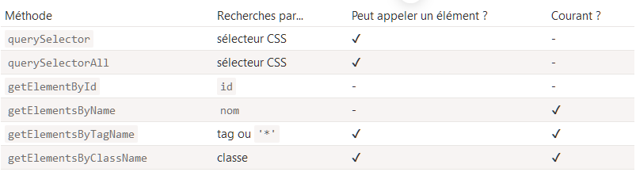

Les outils de navigation du DOM sont très pratiques quand les éléments sont proches les uns des autres. Mais s’ils ne le sont pas ? Comment atteindre un élément arbitraire de la page ?
Il existe d’autres méthodes de recherche pour cela.
Si un élément possède un attribut "id", on peut atteindre cet élément en utilisant la méthode document.getElementById(id), peu importe où elle se trouve.
Par exemple :
<div id="elem">
<div id="elem-content">Elément</div>
</div>
<script>
// récupération de l'élément :
let elem = document.getElementById('elem');
// on met son arrière-plan rouge :
elem.style.background = 'red';
</script>
Il y a aussi une variable globale nommée selon l’id qui référence l’élément :
<div id="elem">
<div id="elem-content">Elément</div>
</div>
<script>
// elem est une référence à l'élément du DOM ayant l'id "elem"
elem.style.background = 'red';
// id="elem-content" contient un tiret, donc ça ne peut pas être un nom de variable
// ...mais on peut y accéder en utilisant les crochets : window['elem-content']
</script>
…A moins qu’on déclare une variable JavaScript avec le même nom, auquel cas celle-ci obtient la priorité :
<div id="elem"> </div>
<script>
let elem = 5; // maintenant elem vaut 5, ce n'est plus une référence à
alert(elem); // 5
</script>
Ne pas utiliser les variables globales nommées selon l’id pour accéder aux éléments !
Ce comportement est décrit dans la spécification, mais il est pris en charge principalement pour la compatibilité .
Le navigateur essaie de nous aider en mélangeant les noms de JS et du DOM. C’est bien pour des scripts simples, intégré dans du HTML,
mais en général ce n’est pas bon. Il peut y avoir des conflits de noms. Aussi, quand quelqu’un lira le code JS sans avoir le HTML
à côté, ce ne sera pas évident pour lui d’où vient la variable.
Dans ce tutoriel, on utilise id pour directement référencer un élément rapidement, quand il sera évident d’où il vient.
Dans la vraie vie, document.getElementById est la méthode à avantager.
RAPPLE : L'ID doit être unique
L’id doit être unique. Il ne peut y avoir qu’un élément dans le document avec un id donné.
S’il y a de multiples éléments avec le même id, alors le comportement de la méthode qui l’utilise est imprévisible,
par exemple document.getElementById pourra renvoyer n’importe lequel de ces éléments aléatoirement. Donc suivez la règle et gardez l’id unique.
Seulement document.getElementById, pas anyElem.getElementById
La méthode getElementById ne peut être appelée que sur l’objet document . Elle va chercher l’id dans le document entier.
querySelectorAll
De loin, la méthode la plus polyvalente, parentNode.querySelectorAll(css-selectors) renvoie tous les éléments à
l’intérieur du "parentNode" correspondant au sélecteur CSS donné en paramètre.
<ul>
<li>Le</li>
<li>test</li>
</ul>
<ul>
<li>a</li>
<li>réussi</li>
</ul>
<script>
let elements = document.querySelectorAll('ul > li:last-child');
for (let elem of elements) {
alert(elem.innerHTML); // "test", "réussi"
}
</script>
Cette méthode est très puissante, car tous les sélecteurs CSS peuvent être utilisés.
On peut aussi utiliser des pseudo-classes
Les pseudo-classes dans le sélecteur CSS comme :hover et :active sont aussi acceptés.
Par exemple, document.querySelectorAll(':hover') renverra l’ensemble des éléments dont le curseur est au-dessus
en ce moment (dans l’ordre d’imbrication : du plus extérieur <html> au plus imbriqué).
querySelector
Un appel à document.querySelector(css) renverra le premier élément d’un sélecteur CSS donné.
En d’autres termes, le résultat sera le même que parentNode.querySelectorAll(css)[0], mais celui-ci
cherchera tous les éléments et en choisira un seul, alors que document.querySelector n’en cherchera qu’un. C’est donc plus rapide,
et plus court à écrire.
matches
Les méthodes précédentes recherchaient dans le DOM.
La commande element.matches(css) ne recherche rien, elle vérifie simplement que "element" correspond au sélecteur CSS donné.
Elle renvoie true ou false. Cette méthode devient utile quand on itère sur des éléments (comme dans un array par exemple) et
qu’on veut filtrer ceux qui nous intéressent.
<ul id="birds">
<li class="bird">perroquet amazone</li>
<li class="bird endangered">aigle des Philippines</li>
<li class="bird">pélican blanc</li>
</ul>
var birds = document.getElementsByClassName('bird');
for (var i = 0; i < birds.length; i++) {
if (birds[i].matches(".endangered")) {
document.write(
"Le/l' - " + birds[i].textContent + "- est en voie de disparition !",
);
}
}
Les ancêtres d’un élément sont : le parent, le parent du parent, son propre parent etc… Les ancêtres forment une chaîne de
parents depuis l’élément jusqu’au sommet.
La méthode elem.closest(css) cherche l’ancêtre le plus proche qui correspond au sélecteur CSS.
L’élément "elem" est lui-même inclus dans la recherche.
En d’autres mots, la méthode closest part de l’élément et remonte en regardant chacun des parents. S’il correspond au sélecteur,
la recherche s’arrête et l’ancêtre est renvoyé.
<h1>Contenu</h1>
<div class="contents">
<ul class="book">
<li class="chapter">Chapître 1</li>
<li class="chapter">Chapître 2</li>
</ul>
</div>
<script>
let chapter = document.querySelector('.chapter'); // LI
document.write(chapter.closest('.book')); // UL
document.write(chapter.closest('.contents')); // DIV
document.write(chapter.closest('h1')); // null (car h1 n'est pas un ancêtre)
</script>
Il y a aussi d’autres méthodes pour rechercher des balises par tag, classe, etc…
Aujourd’hui, elles sont principalement de l’histoire ancienne, car querySelector est plus puissante et plus courte à écrire.
Donc ici, on va surtout en parler dans le souci d’être complet, comme elles peuvent encore se retrouver dans des vieux scripts.
elem.getElementsByTagName(tag) cherche les éléments avec le tag donné et renvoie l’ensemble de ces éléments.
Le paramètre tag peut aussi être une étoile "*" pour signifier n’importe quel tag.
elem.getElementsByClassName(className) renvoie les éléments qui ont la classe CSS donnée.
document.getElementsByName(name) renvoie les éléments qui ont l’attribut name, dans tout le document.
Très rarement utilisé.
Par exemple :
// récupérer toutes les divs du document.
let divs = document.getElementsByTagName('div');
N’oubliez pas la lettre "s" !
Les développeurs en devenir oublient parfois la lettre "s". Ils essaient donc d’appeler getElementByTagName au lieu de getElementsByTagName. La lettre "s" letter n’apparaît pas dans getElementById, car cette méthode renvoie un seul élément. Mais getElementsByTagName renvoie un ensemble d’éléments, il y a donc un "s".
Elle renvoie une liste, pas un élément !
Une autre erreur répandue est d’écrire :
// ne fonctionne pas :
document.getElementsByTagName('input').value = 5;
Cela ne va pas marcher, parce qu’on essaie d’affecter une valeur à un ensemble d’objets plutôt qu’à un élément de cet ensemble. On devrait plutôt itérer sur l’ensemble ou récupérer un élément par son index, et lui affecter la valeur, comme ceci :
// doit fonctionner (s'il y a un élément 'input' )
document.getElementsByTagName('input')[0].value = 5;
Toutes les méthodes "getElementsBy*" renvoient l’ensemble courant. De tels ensembles montrent toujours l’état courant du document et se mettent à jour automatiquement quand celui-ci change. Dans l’exemple ci-dessous, il y a deux scripts :
1. Le premier crée une référence à l’ensemble des <div>. Maintenant, sa longueur est 1.
2. Le second se lance après que le navigateur aie rencontré un autre <div>, donc sa longueur est 2.
<div>Premier div</div>
<script>
let divs = document.getElementsByTagName('div');
alert(divs.length); // 1
</script>
<div>Second div</div>
<script>
alert(divs.length); // 2
</script>
A l’opposé, querySelectorAll renvoie un ensemble statique. C’est comme un tableau fixe d’éléments Si on l’utilise, alors les deux scripts ci-dessus renvoient 1:
<div>Premier div</div>
<script>
let divs = document.querySelectorAll('div');
alert(divs.length); // 1
</script>
<div>Second div</div>
<script>
alert(divs.length); // 1
</script>
Maintenant, on voit facilement la différence. L’ensemble statique ne s’est pas incrémenté après l’apparition d’un nouveau div dans le document.
Il y a 6 principales méthodes pour rechercher des balises dans le DOM :
De loin, les plus utilisées sont querySelector et querySelectorAll, mais getElement(s)By* peut être de temps en temps utile ou rencontrée dans des scripts plus anciens.
Comment trouver ?…
Le tableau avec id="age-table".
Tous les éléments label dans ce tableau (il devrait y en avoir 3).
Le premier td dans ce tableau (avec le mot “Age”).
Le form avec name="search".
Le premier input dans ce formulaire.
Le dernier input dans ce formulaire.
Voici la solution : Solution